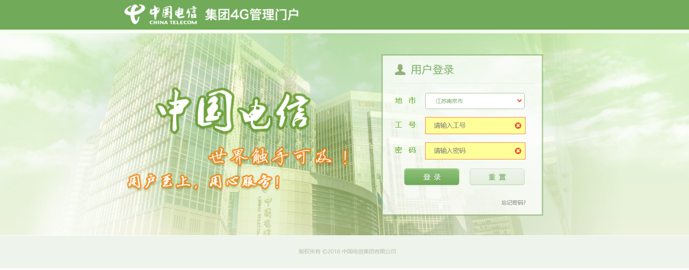
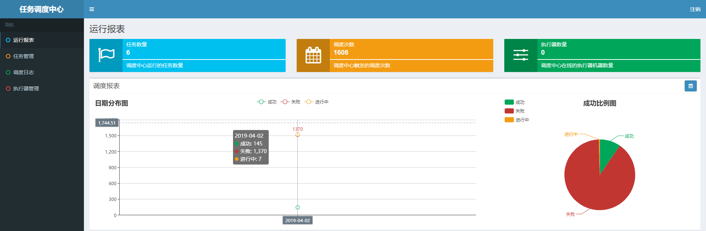

-
- Basic info. 基本信息
- 个人信息: 张磊 / 男 / 27岁
- 学校/专业: 湘潭大学/软件工程（2011.09-2015.06）
- 英语水平: CET-4
- 工作年限: 5年
- 期望职位: 高级Java开发工程师
-
- Contact. 联系方式
- 邮箱: 675597092@qq.com
- 电话: 15200345227
-
- Application. 应聘岗位
- 高级Java工程师
-
- Experience. 项目与工作经验
鸥游酒店管理有限公司（2019.5 - 2020.3.11）
-
OYO酒店管理平台（2019.07-2020.3.11
项目介绍：
酒店主数据管理，包含酒店房间、房型、酒店图片，设施，渠道等业务中台个人职责：
1、主要负责原有项目的维护开发，以及对现有项目结构，模型等进行优化；
2、优化重构冗余接口服务，提高快速响应能力；项目收获：
1、熟悉了工作流,Mq消息处理等技术的使用。
2、SpringBoot+dubbo的微服务架构
3、学习使用react.js开发前端页面。
4、学习使用python3开发脚本工具。
5、荣获项目奖金。
亚信科技(南京)有限公司（2015.7 - 2019.5）
-
电信4G管理平台（2015.07-2019.5）
项目介绍：
此项目是中国电信集团提供给全国各省市对营业员，各渠道销售员进行信息管理，权限控制的集约平台、管理门户主要包含员工管理，组织管理，权限管理，角色管理，公告管理，终端资源管理、号卡资源管理等，是一个对接各省份电信业务系统的集约CRM系统.个人职责：
1、主要负责后端功能开发，完成了40+功能界面，并对外提供接口服务，优化接口性能。。
2、利用线程池，自定义注解，实现对敏感操作进行异步短信通知，记录操作日志等，提升界面30%访问速度。
3、使用Echarts、存储过程完成了对全国工号登录，订单量等报表。
4、利用单点登录集成外围系统等。
5、利用redis对session进行共享，通过redis提供部分表的查询性能，对memcached、redis等服务有了深入的了解。项目收获：

熟悉了spring、mybatis等开源框架，从出入职场，成长为独立的管理负责人，能快速的进行业务开发，迭代. -
分布式调度中心
项目介绍：
现有各系统模块定时任务实现方式不一且不具备统一管理界面，不方便进行统一管理个人职责：
1、学习开源框架elastic-job、xxl-job，决定技术选型，引入xxl-job分布式框架，并对xxl-job进行二次开发。
2、增加定时任务自动扫描注册功能，改用Druid连接池，增加euruka服务注册中心，对外提供API服务，支撑各微服务中心，实时增加、启用、停用定时任务
3、优化界面，增加批量操作功能。
4、增加账号权限控制
5、增加操作日志记录
项目收获：
学习了xxl-job/Quartz框架源码,对分布式调度架构有了一定了解项目周期：3个月
 -
中国电信3.0微服务
项目介绍：
对现有项目进行微服务升级改造个人职责：
负责微服务工程基础搭建，参加了订单中心微服务的开发工作，主要负责日志切面，数据路由切面等功能开发，完成了Hbase访问工具开发。项目收获：学习了Euruka/hystrix/zuul/feign/ribbon等中间件的使用，对微服务架构有一定了解，学习了Hbase数据库。
-
网络监测工具-windows桌面应用
项目介绍：
为支持项目容灾前期准备工作，方便各省快速检查网络,DNS等，支持31个省容灾校验准备工作，方便营业员快速检查，并自动生成校验文件到本地桌面.个人职责：独立负责需求确定，界面设计，业务功能开发等
项目收获：
学习了使用采用node.js、Electron快速开发构建桌面应用;
项目周期：1个月
-
QQ群机器人
项目介绍：
日常运维工作中，为方便测试组，31个省的联调工作，需要对测试工号进行各种授权，密码重置，解锁等一系列操作.个人职责：
在对日志运维工作总结，归纳需要对外提供的服务接口，利用酷Q机器人接受联调群指令，调用测试环境RestFul接口服务工程，实现自动运维工作项目收获：很大幅度的提升了各省联调效率，节约了大量工作时间;
项目周期：1个月
-
- Skill. 技能清单
后端
-
专业技能
具有扎实的Java基础，对面向对象编程有深刻的理解，熟练掌握java IO流、集合、多线程、反射，泛型，注解，网络编程，NIO等基础开发技术
熟练使用常用的java集合类以及常用集合，了解AQS,CAS,lock,volatilte,synchronized等原理。
熟悉java常用的设计模式：单例模式、观察者模式、策略模式、工厂模式、代理模式等
了解关系数据库设计原理、数据库索引、锁机制，能对SQL调优，数据库表性能优化
熟练使用Spring、Redis，MQ，ZooKeeper，Dubbo等常用分布式框架技术，了解常用的高并发解决方案：扩容，缓存，应用拆分&限流，服务降级&熔断，数据库切库，分库分表等
对Java虚拟机、JMM、垃圾收集机制、GC算法、JVM常用配置参数、classLoader、锁机制，JVM参数调优有一定了解。
了解 react，能用react进行前端界面开发